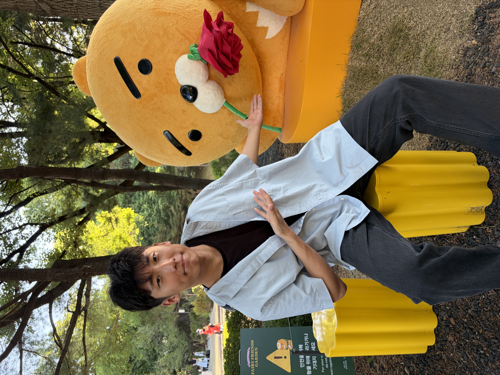

PontiFi
Building infrastructure that transforms B2B trade receivables into a liquid, on-chain asset class. The goal is to unlock capital held up in global supply chains.
Toronto, Canada · Software engineer
I’m David Park, a software engineer with a systems mindset. I turn complex requirements into reliable, usable products, from developer tooling and fintech infrastructure to full-stack applications.

01 / 01
Photo taken: Seoul Forest, Seoul, Korea
01 / About
Current role
Amazon Prime Video PV Privacy team Toronto, CanadaThe way I work
The best software feels straightforward because the hard decisions have already been made. I enjoy working through those decisions: clarifying the problem, designing clean paths through complexity, and shipping work a team can build on.
I currently work at Amazon on Prime Video’s PV Privacy team. I graduated from the University of Toronto in April 2026 as a Computer Science Specialist, and my experience spans FPGA tooling, web products, research systems, and early-stage fintech.
Start with the real user and the real constraint.
Make the reliable path the easy path.
Leave systems clearer than I found them.
02 / Experience
Hands-on roles where reliability, collaboration, and attention to the details mattered.

Amazon · Prime Video · PV Privacy · Toronto, ON
Working with Prime Video’s PV Privacy team on privacy-focused engineering.
Microchip Technology · Toronto, ON
Contributed to backend infrastructure, core libraries, and data flow systems for PolarFire Studio, the company’s FPGA design software.

University of Toronto · Centre for Social Services Engineering
Contributed across the frontend and backend of a modern web application as part of a part-time university team.
03 / Selected work
A selection of work spanning product, systems, and research. Each project sharpened a different part of how I build.
Building infrastructure that transforms B2B trade receivables into a liquid, on-chain asset class. The goal is to unlock capital held up in global supply chains.
Contributed to a custom toy operating system in Rust on the file system team, implementing and learning the foundations that make software run.
Contributed to research into database acceleration across CPU, GPU, and FPGA hardware. The work explored paths to better performance for data-intensive workloads.
Developed an Electron app to help educators manage student progress in low-connectivity environments, working in a seven-person delivery team.
04 / Toolkit
Languages
Product & web
Systems & workflow
05 / Contact
Have something in mind?
I’m always glad to meet people who care about building useful things well.
mjdavid.park@mail.utoronto.ca